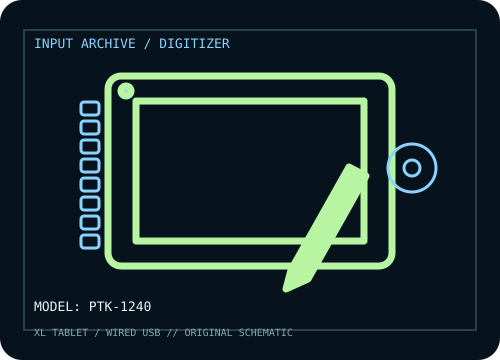

[ PEN TABLETS AND DIGITIZERS // IDENTIFIED COMPONENT ]
Wacom Intuos4 XL
Extra-large professional pen tablet from the Intuos4 generation; preserve its original pen and driver context.

MODEL IDENTIFICATION: Manufacturer model / identifier: PTK-1240. Confirm the unit label, bundle contents, regional suffix, and revision against its product documentation before compatibility or repair work.
Model specifications
| Catalog subcategory | Pen tablets and digitizers |
|---|---|
| Exact model / SKU | PTK-1240 |
| Active area | 487.7 × 304.8 mm (19.2 × 12 in) active surface. |
| Pressure and pen technology | 2,048 pressure levels; battery-free, cordless Wacom electromagnetic-resonance Grip Pen with tilt support. |
| Resolution / report rate | 5,080 lpi digitizer resolution is listed for the Intuos4 generation; Wacom documentation does not specify a report rate for this model. |
| Interface | USB 2.0 wired connection; no display output. |
| Driver, OS and compatibility | Originally documented for Windows XP/Vista/7 and Mac OS X 10.4.8 or later. Driver availability on current Windows/macOS versions is release-dependent; use Wacom’s current driver selector and verify PTK-1240 support before deployment. |
| Power | USB bus-powered; the pen is battery-free. Use a direct host USB port or a known-good powered hub. |
| Calibration and service notes | Map the active area to the intended display in the Wacom driver; run its pen calibration tool after changing display layout. Preserve pen nibs and driver settings. |
Preservation and service notes
USB bus-powered; the pen is battery-free. Use a direct host USB port or a known-good powered hub. Map the active area to the intended display in the Wacom driver; run its pen calibration tool after changing display layout. Preserve pen nibs and driver settings.
Record the as-found model label, accessories, host OS, driver/firmware version, calibration state, and test method. Published capability does not guarantee compatibility with a particular application or individual used unit.
Manufacturer sources
- Intuos4 product resources and manual lookup — WacomManufacturer resource directory for Intuos4 user documentation and model identification.
- Drivers & software — Wacom (PTK-1240 search)Manufacturer driver selector; check the installed OS and model-specific compatibility before use.
Manufacturer product and support pages can change. Save the applicable manual/driver release notes and verify the exact model and revision at setup.